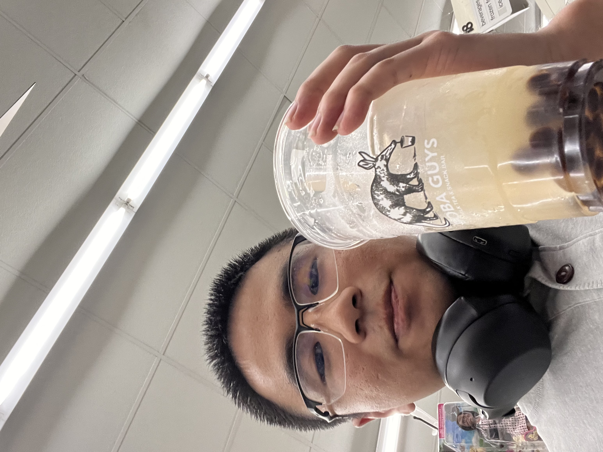
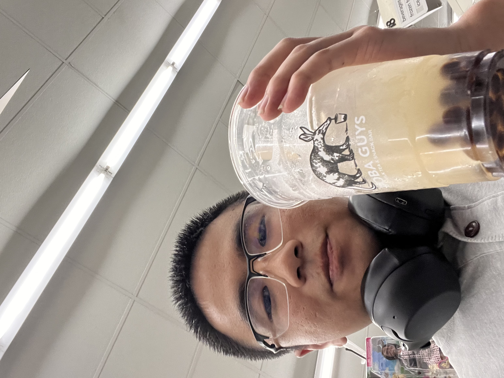
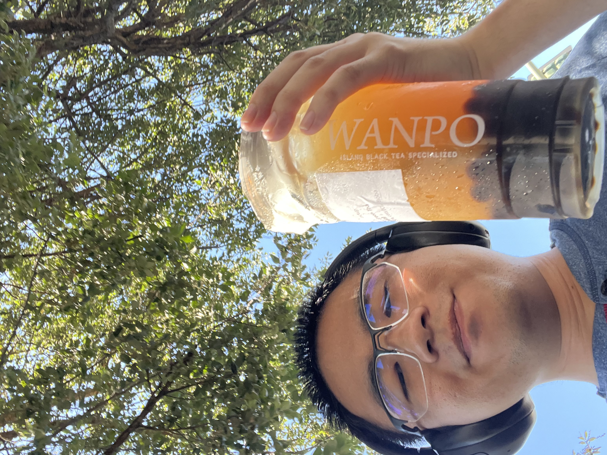
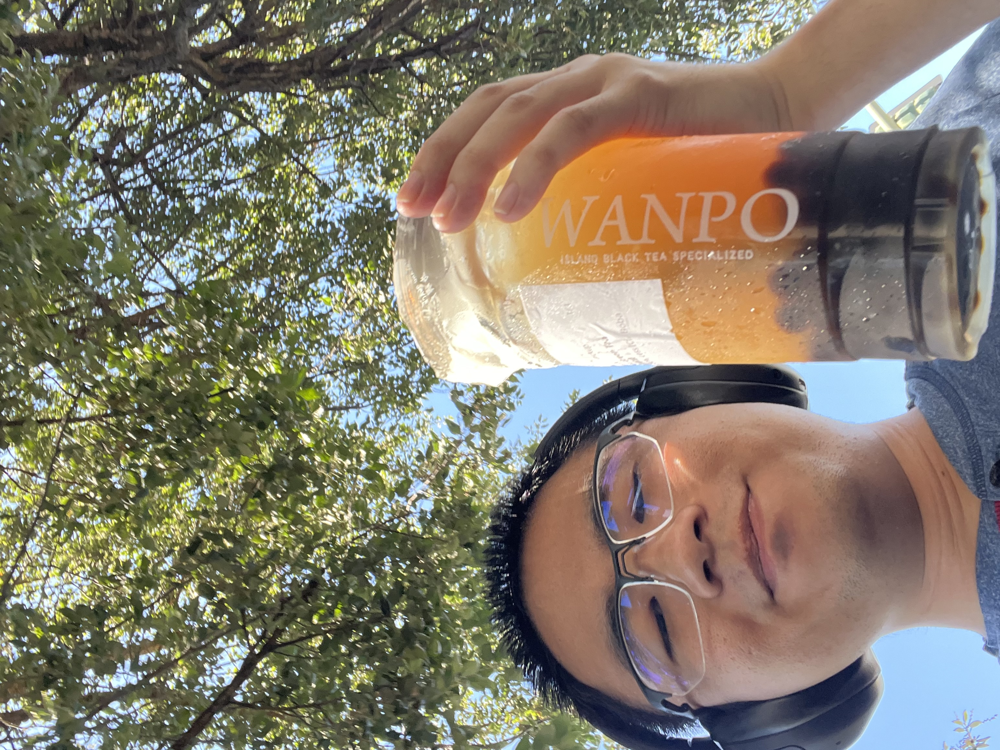

 

Boba
I love finding all the best boba drinks that a city has to offer. I don't have any specific preference - I like fruit teas, milk teas, and milk lattes. However, I do have some favorites in mind. The mango pomelo sago from Yifang in Torrance is extremely good as the mangos there are very fresh, and the honey lemon fruit tea from any Happy Lemon is one of the best mixes of honey and lemon I've ever tasted. Of course, there are more such as the Oolong Milk Tea from Wushiland in La Jolla and the Hong Kong Milk Tea from Loose Leaf in Long Beach, and just Thai Tea no matter where you go.